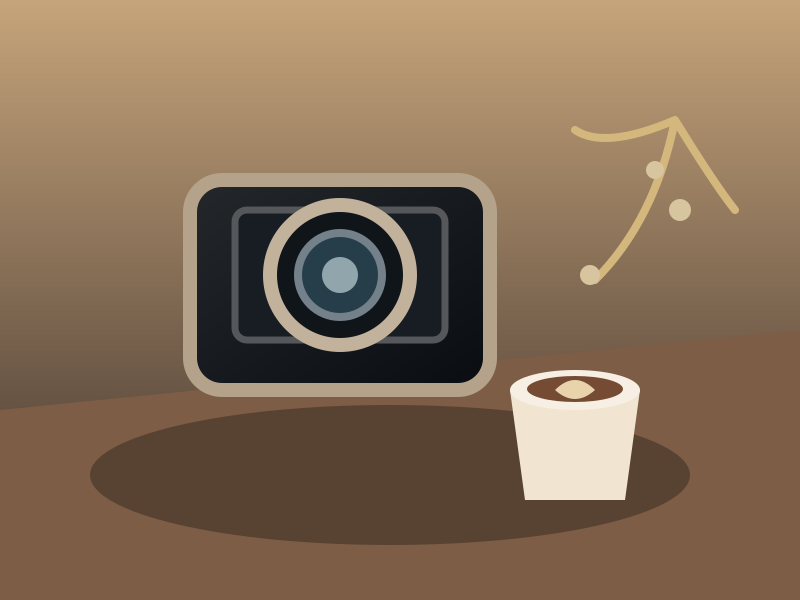

Concept development
Shape a visual idea into a clear creative direction and coherent scene.
Transform a rough concept into a carefully art-directed image prompt, with attention to composition, camera, lighting, styling, and visual detail.
Shape a visual idea into a clear creative direction and coherent scene.
Specify camera perspective, lens character, lighting, framing, and materials.
Explore fashion, lifestyle, music, and experimental graphic concepts.
Improve prompts through targeted changes while preserving key constraints.
Original visual studies created to demonstrate how a detailed prompt can guide mood, composition, lighting, and art direction.
Portrait lighting, natural textures, art-directed styling, and layered foliage.

Material detail, warm studio light, controlled reflections, and balanced props.
Atmospheric color grading, layered depth, silhouette, and wide composition.
Mixed-media layering, graphic geometry, portrait cut-outs, and editorial contrast.
For image creators, designers, photographers, and prompt engineers who want more deliberate results from their image-generation workflow.